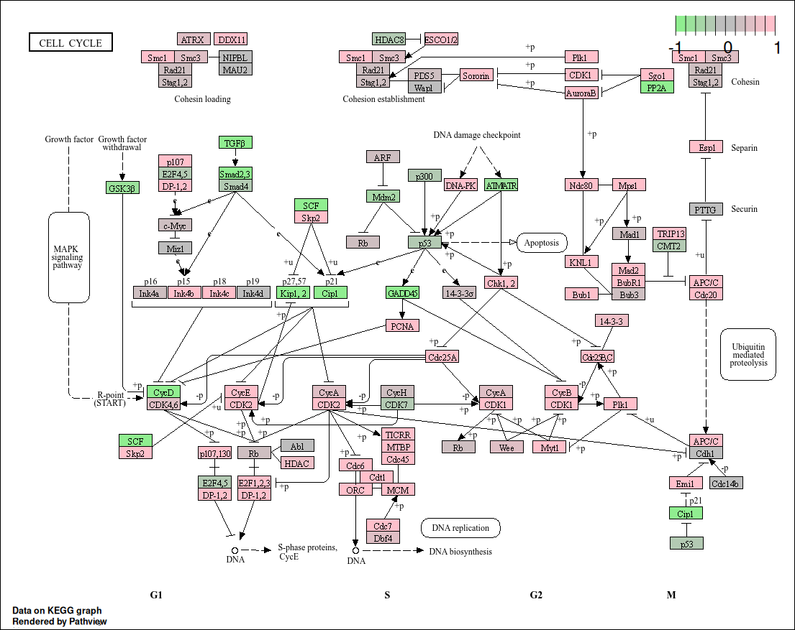

Pathview for KEGG
Cordeliers Artificial Intelligence and Bioinformatics
2025-05-12
Source:vignettes/pathview.Rmd
pathview.Rmd
An additional analysis is given by the Pathview package
Pathview is an R tool used to visualize gene expression data on biological pathways (from KEGG), it helps for seeing how the genes of interest are involved in known cellular processes like the cell cycle or apoptosis.
To create the cell cycle graph, we use the function
pathview. The expected input for this function is a vector
of the log2FoldChange of the DE genes.
If you want to use this notebook for your projects, it is available here
Pre-processing
In this page, you will only see the specific code to get the graph. The first steps are the same for every visualization. Before the next cells of code, you will need to do all the pre-processing analyses, until the diffexp. If you want to see the code, you can copy/paste it from the other pages
This is what you get after the diffexp:
head(diffexp_mac)## baseMean log2FoldChange lfcSE pvalue padj
## A1BG 185.361814 0.75051222 0.3099124 4.533451e-03 2.242446e-02
## A1BG-AS1 315.155738 -0.32048380 0.1677420 4.293224e-02 1.375238e-01
## A1CF 1.604499 0.04585155 0.4781308 8.266114e-01 NA
## A2M 71665.137761 -1.19356380 0.2310016 3.375187e-08 7.203143e-07
## A2M-AS1 39.045426 0.88104208 0.5735779 1.961794e-02 7.405728e-02
## A2ML1 2.457721 -0.04618380 0.4598400 8.400364e-01 9.379652e-01Conversion
The next cell will take the log2FoldChange and ENTREZID to get the
expected object for the pathview function.
#|message: false
library(org.Hs.eg.db)
library(dplyr)
# Récupérer les noms des gènes
gene_symbols <- rownames(diffexp_mac)
# Conversion symboles → Entrez IDs
conversion <- AnnotationDbi::select(
org.Hs.eg.db,
keys = gene_symbols,
columns = c("ENTREZID"),
keytype = "SYMBOL"
)
# Fusion avec vos données d'expression
diffexp_mac$SYMBOL <- rownames(diffexp_mac)
diffexp_mac <- left_join(diffexp_mac, conversion, by = "SYMBOL")
# Créer un vecteur de log2FC nommé avec les Entrez IDs
gene.data <- diffexp_mac$log2FoldChange
names(gene.data) <- diffexp_mac$ENTREZID
# Supprimer les entrées sans identifiants
gene.data <- gene.data[!is.na(names(gene.data))]
head(gene.data)## 1 503538 29974 2 144571 144568
## 0.75051222 -0.32048380 0.04585155 -1.19356380 0.88104208 -0.04618380Graph
Once done, we can call the function with specific parameters that match our dataset.
#|message: false
pathview(
gene.data = gene.data, # Données de log2FoldChange pour les gènes DE
pathway.id = "hsa04110", # ID de la voie KEGG (par ex. hsa04110 pour l'apoptose)
species = "hsa", # Espèce (ici Homo sapiens)
gene.idtype = "entrez", # Utiliser les identifiants Entrez
out.suffix = "macrophage_apoptosis", # Suffixe pour les fichiers de sortie
low = "lightgreen", # Couleur pour les valeurs faibles (logFC négatif)
high = "pink", # Couleur pour les valeurs élevées (logFC positif)
na.color = "gray",
kegg.native = TRUE
)
Using the pathview package, we visualized the impact of
differentially expressed genes from the macrophage dataset
on the KEGG apoptosis pathway (hsa04110). The pathway
diagram highlights genes based on their log2FoldChange
values: upregulated genes are shown in pink (Cdc25a,
CycA, CycB, …), while downregulated genes appear in
light green (GADD45, Cip1, CycD, …). Genes with no expression data or
missing values are colored gray. This visualization allows us to assess
how the IFN-γ treatment influences components of the
apoptotic signaling cascade, helping to identify specific regulatory
points potentially activated or suppressed in response to the
stimulus.